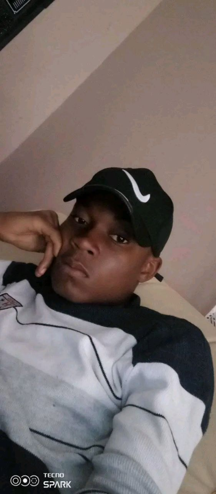

Bonjour, je suis JOSUE TAGALA
Étudiant en L2 et passionné par les réseaux administratifs
VOIR MES PROJETS
À propos de Moi
Bonjour! je m'appelle JOSUÉ TAGALA je suis un etudiant dynamique et motivé en Informatique à l'UDBL. Véritable passionné par les réseaux administratifs, SQL les bases des données et le développenemt web, je m'intéresse particulierement à l'architecture des systemes et à l'intelligence artificelle et le design graphique. je suis constamment à la recherche de nouvelles opportunités. d'apprentissage et de défis stimulants.
Au cours de mes études, j'ai développé de solides compétences en programmation. je suis une personne rigoureuse,créative et j'aime travailler en equipe pour atteindre des objectifs communs.Mon objectif est de contribuer à des projets innovants,trouver un stage en administraction systèmes, et maitriser le Framework laravel
Mes Compétences
| CATEGORIE | COMPÉTENCES | NIVEAU |
|---|---|---|
| réseaux administraction systèmes | configuration de serveurs linux & windows, infrastructure Maintenance du parc informatique et câblage réseau, sécurité gestion des acces pare-feu et protocoles de sécurité, services configuration DHPCP, DNS et Active Directory | Intermédiaire |
| Progammation | HTML.CSS.javaScript.Python | Avancé |
| Design | Figma.Photoshop (bases) | Intermédiaire |
| Langues | Français(natif).Anglais (fluide) | Avancé |
| outils | Git VS Code, suite office | Avancé |
| Soft Skills | Communication; Résolution de problèmes, Autonomie | Expert |